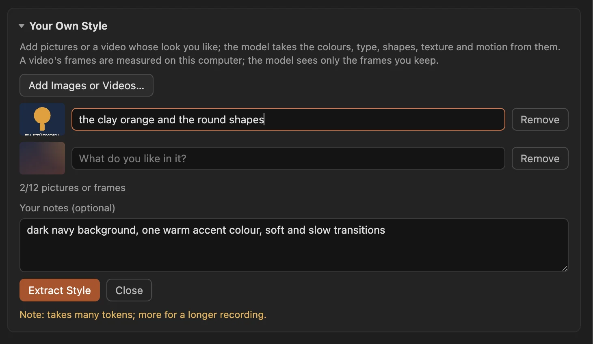

Animation styles and your own
Every animation is made in a style: its colours, type, shapes and motion. Kilnframe has 137 of them, 37 in 3D, each with its own sounds. You can also make your own.

Find a style
In the Animations tab, under Animation styles:
- Search styles (name or description).
- Filters by kind (3D, Illustration, Flat, Editorial, Retro, Tech, Handmade, Cinematic, Minimal, Playful), mood (Calm, Energetic, Serious, Fun, Luxury, Warm, Futuristic), colour (Dark, Light, Colourful, Mono, Pastel, Neon) and what they suit (Explainer, Data, Story, Product, Education, News). Clear filters shows them all again.
- The count, such as 137 of 137 styles, says how many fit.
Pick one and it becomes the style of your next animation. 3D styles take much longer to draw than flat ones.
Your own style
- Start oneUnder My Styles, press Add Style.
- Add what you likeAdd Images or Videos… Write for each What do you like in it?, and Your notes (optional) for the whole, for example “dark background, one accent colour, soft and slow transitions”.
- For a video, pick its framesA video's frames are measured on this computer; Pick Frames lets you leave some out. The model sees only the frames you keep.
- Make itPress Extract Style; up to 12 pictures or frames go in. Your AI model takes the colours, type, shapes, texture and motion from them.

Later, Edit changes your notes: Save Notes keeps them at once, with no model call; Regenerate makes the style again. Delete Style moves it to the Trash; animations already made with it stay as they are.
A brand kit can carry a default style for new projects (Brand kits and fonts).